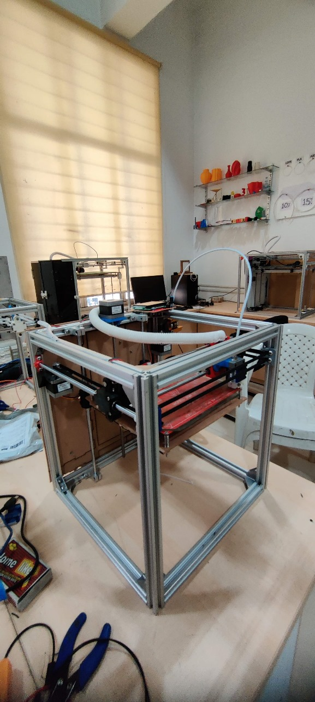
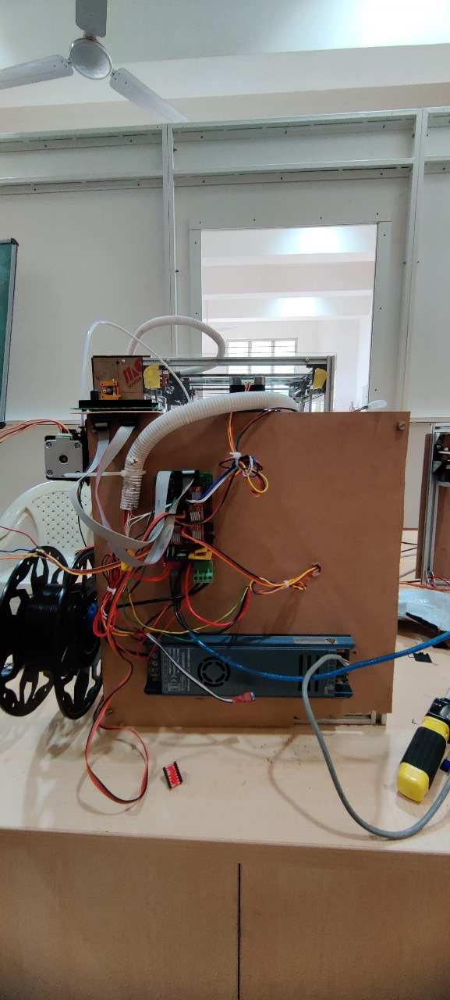
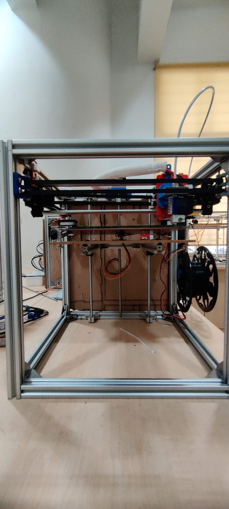
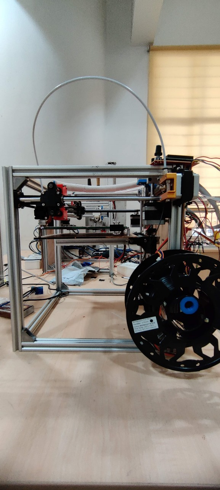
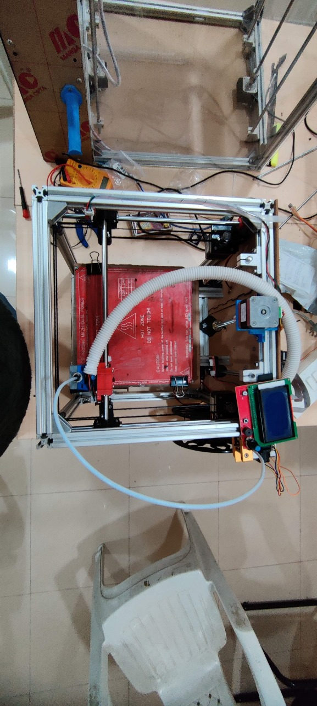
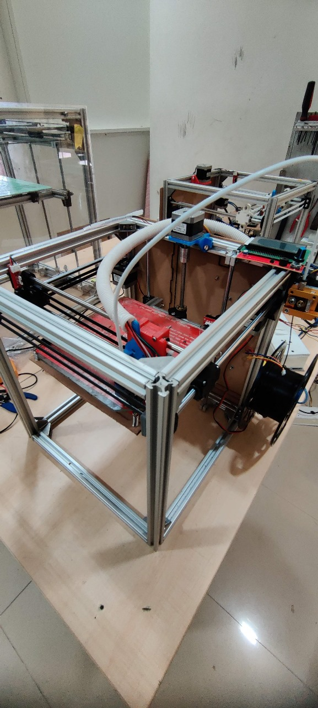

Why Build One When You Can Buy One?
The goal wasn't just to have a 3D printer. It was to understand every layer of how one works (mechanical, electrical, and software) by building it from the ground up. The secondary constraint was cost: every decision had to be justifiable on a tight budget, which meant sourcing locally, choosing open-source firmware over proprietary systems, and solving problems with ingenuity rather than money.
The result is a CoreXY motion system, an architecture where both stepper motors are fixed to the frame and drive the print head in X and Y simultaneously through a crossed belt arrangement. The bed moves only in Z. This gives faster, more accurate head movement than the more common Cartesian bed-slinger design, at the cost of more complex belt routing and calibration.
This was a team effort across four people, with responsibilities distributed across mechanical assembly, electronics integration, firmware configuration, and testing.
The Machine at Various Stages






The Build Process
Frame Construction
Started with raw V-slot aluminum extrusions cut to length and filed at the edges for clean joins. Corner brackets and T-nuts were used to assemble the cubic frame structure. Getting the frame square was the first real challenge: any racking in the frame propagates through every subsequent alignment step.
Motion System Assembly
Smooth steel rods were mounted for the X and Y axis rails. The CoreXY belt drive was routed through idler pulleys on opposing corners, a configuration that requires both motors to work in coordinated pairs for every movement. NEMA 17 stepper motors were chosen over servos for their simplicity and compatibility with the Marlin firmware ecosystem.
Heated Bed & Z-Axis
The heated bed was mounted on a separate Z-axis carriage driven by a lead screw, keeping it fully independent of the X-Y motion system. The bed uses a MK2B-style heated PCB for temperature control, essential for PLA adhesion and preventing warping on first-layer contact.
Electronics Integration
An Arduino Mega with a RAMPS 1.4 shield forms the control backbone, with A4988 stepper drivers for each motor axis. A Bluetooth module was integrated for wireless communication, routed through a Raspberry Pi running OctoPrint as the print server, allowing CAD models to be sent directly from a laptop to the printer over the local network without USB tethering.
Firmware & Software Configuration
Marlin firmware was flashed onto the Arduino and configured for the specific geometry, motor specifications, and thermistor types of this build. Test G-code files were prepared in Ultimaker Cura and sent to the printer. The entire software stack is open-source, keeping the build cost down and the system fully modifiable.
What Went Wrong and How It Got Fixed
Both problems that emerged during testing were diagnosed methodically and resolved. One through firmware, one through a hardware substitution decision.
Z-Axis Layer Height Miscalibration
Early test prints came out visibly warped. Layers were spaced too far apart, causing the structure to lean and lose dimensional accuracy. The root cause was in the steps per layer configuration in Marlin for the Z-axis stepper motor. The firmware was advancing the bed by more distance per step than the lead screw geometry required. Recalculating the correct steps/mm value from the motor's step angle and lead screw pitch, then updating the Marlin configuration, resolved the issue completely.
Extruder-Filament Temperature Mismatch
The initial extruder was a borrowed unit calibrated for engineering filaments running at temperatures significantly higher than standard PLA requires. The locally available PLA was over-melting: becoming too fluid to hold shape and slumping onto previous layers before setting. Rather than attempting to work around the temperature mismatch, the decision was made to source a locally available hotend rated for the correct PLA temperature range.
Specifications
| Motion Architecture | CoreXY — fixed motors, moving head, Z-bed |
| Frame | V-slot aluminum extrusions, cut and assembled from raw stock |
| Motors | NEMA 17 stepper motors (X, Y, Z, extruder) |
| Control Board | Arduino Mega + RAMPS 1.4 shield, A4988 stepper drivers |
| Firmware | Marlin (open-source, custom configured) |
| Slicer | Ultimaker Cura |
| Print Server | OctoPrint on Raspberry Pi via Bluetooth |
| Print Material | PLA (locally sourced) |
| Heated Bed | MK2B PCB heater for first-layer adhesion |
Key Takeaways
The importance of mechanical precision
Frame squareness, belt tension, and rod alignment all compound. A small error at the frame stage shows up as print quality issues at the end.
Constraints lead to better ideas
The budget constraint forced deliberate component selection and creative problem-solving at every stage. Everyone loves a challenge!
Debugging Is an Engineering Skill
Both problems that emerged were solved by isolating variables, identifying root causes, and applying the correct fix rather than patching symptoms. That approach applies to any engineering problem.